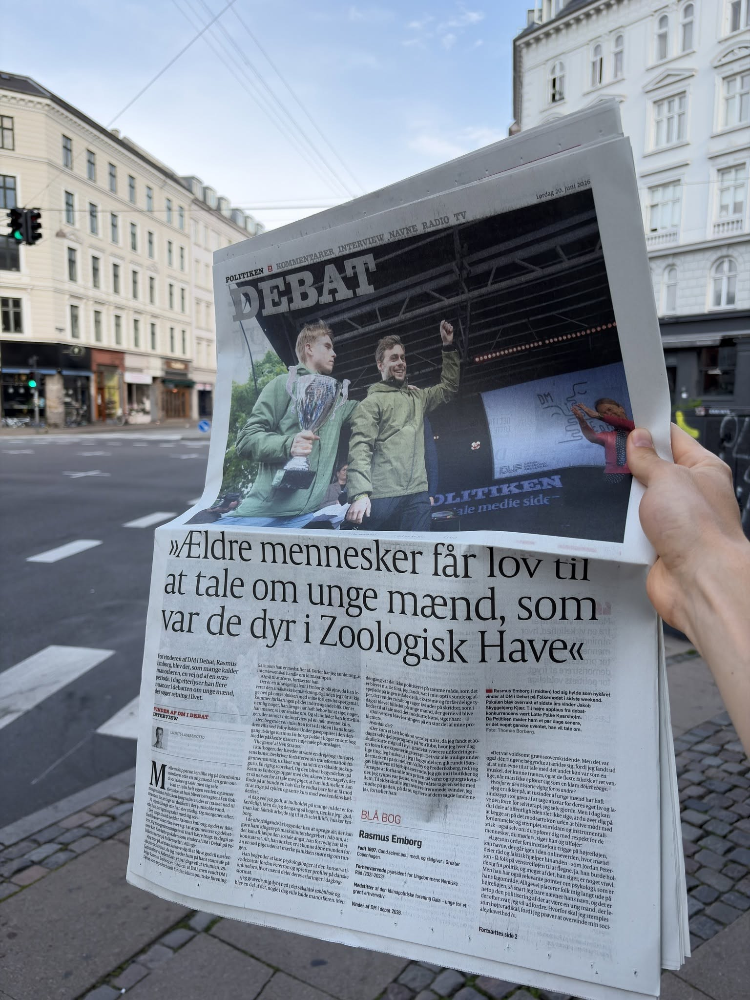
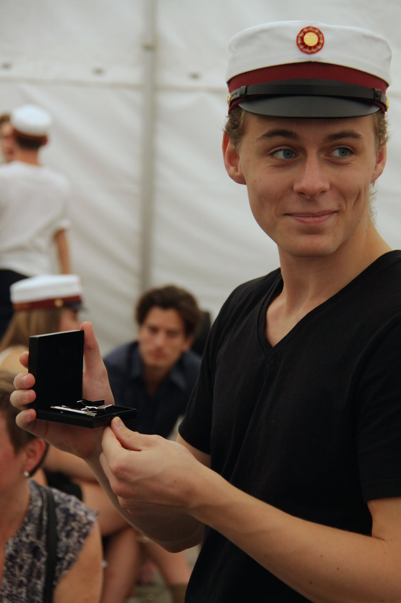

Vi udskammer unge mænd, der bare søger svar
20.06.2026
Efter jeg vandt DM i Debat, har jeg valgt at åbne op om noget, jeg har holdt hemmeligt i mange år. En personlig fortælling om social angst, skam og hvordan vi taber de unge mænd, der bare søger svar.
Efter jeg vandt DM i Debat, har jeg tænkt rigtig meget over, hvad jeg egentlig vil bruge min stemme til. Det er blevet til et meget personligt interview i Politiken, som du kan læse i dag.

Jeg har nemlig valgt at åbne op for noget, jeg har holdt hemmeligt i mange år, fordi jeg har været bange for omverdens reaktion og ramt af skam.
Da jeg gik i gymnasiet, fik jeg konstateret social angst. Jeg var så bange for at tale med piger (og andre), at jeg kunne finde på at bunde en halv flaske vodka derhjemme, bare for at turde sætte mig på cyklen og sætte kursen mod en fest. Nogle gange vendte jeg endda om på vejen.
I de år ledte jeg desperat efter en vej ud af mit hoved, og det ledte mig forbi alt fra ”The Game” af Neil Strauss og Jordan Petersson. Der tror jeg egentlig mange unge mænd har været, men vi taler nok ikke så højt om det.
Jeg var uenig i langt det meste, af hvad de skrev. Men pointen om, at man selv skulle tage ansvar og konfrontere sin frygt, blev hængende. Som Jordan Petersson skrev, skal man gå ind i den mørke skov.
Jeg endte på danske onlineforums i hvad nogle i dag nok vil kalde manosfæren. Jeg oplevede dem dog ikke som hverken hadfulde eller farlige. Jeg så snarere en samling af mænd, der forsøgte at få et bedre liv gennem selvterapi, skriblerier og broderskab med andre i en lignende situation. De fleste skrev anonymt. Nok fordi de var bange for at blive stemplet af dem derhjemme.
Her fandt jeg støtte og gode råd til at arbejde med mig selv, og min redning blev et 30-dages program, hvor jeg hver dag skulle gøre noget jeg var bange for. Tale med ALLE til festen, gå i byen helt alene eller invitere fremmede ud på date. Jeg har efterhånden prøvet det meste.
Med tiden fik jeg det bedre. Nok fordi jeg lærte, at jeg ikke døde af en afvisning og fandt ud af, at så længe man behandler den anden med respekt, så oplevede jeg faktisk kun at blive taget godt imod. De fleste synes sgu det er et kompliment, at nogen synes du ser sød ud eller, at et fremmed menneske sludrer med dig i bussen.

Du risikerer nemt at blive stemplet som klam eller højreradikal, bare fordi du forsøger at overvinde din sociale akavethed med det andet køn.
Men når jeg følger med i den offentlige debat i dag, får jeg en knude i maven. Jeg oplever, at vi er endt et sted, hvor vi kaster om os med begreber som ”manosfæren” og bruger det som et dovent mærkat på alt muligt, der overhovedet ikke har noget med radikalisering eller grænseoverskridende adfærd at gøre.
Et sted hvor du nemt risikerer at blive stemplet som klam, instrumentalistisk eller højreradikal, bare fordi du forsøger at overvinde din sociale akavethed med det andet køn.
Jeg tror det skaber en mur af uberettiget skam omkring helt naturlige, sårbare ønsker. Når vi på venstrefløjen lider af berøringsangst og afviser den her onlineverden uden nuancer, så rammer vi også de sunde fællesskaber for unge mænd, der blot leder efter værktøjer til selvudvikling eller forsøger at håndtere deres egne indre dæmoner.
Det blev tydeligt for mig sidste lørdag i Allinge, da jeg midt om natten blev stoppet af nogle unge fyre fra Liberal Alliances Ungdom. De påstod hårdnakket, at maskulinitet og det at tage ansvar for sig selv pr. definition hører til på højrefløjen, og at venstreorienterede mænd har svigtet deres eget køn ved at indordne sig under MeToo og cancel culture.
Det er jeg fundamentalt uenig i.
Men situationen indfanger perfekt problemets kerne. Højrefløjen og de borgerlige tænkere vinder de unge mænd, fordi de rent faktisk tør give klare, konkrete svar på, hvad man skal stille op mandag morgen, når man står op, mens vi på venstrefløjen ender med at udskamme helt normale unge mænd ved ikke at give plads til nuancerne. Eller, det er måske en del af svaret.
Vi har et så meget større ansvar for at rumme de her unge usikre mænd og give dem klare svar, inden amerikanske populistiske stemmer gør det før os.
Ganske sigende har jeg i løbet af den sidste uge allerede haft mange gode snakke med andre unge mænd, der har kunne genkende dem selv i min historie. Unge fyre der sjældent blander sig i politik, eller som selv er fra venstrefløjen, men som alligevel ikke har turde fortælle åbent om, at også de har siddet i de sene timer og prøvet at finde svar på, hvordan de kunne overvinde deres dæmoner.
I dag er algoritmerne bare endnu voldsommere end da jeg gik i gymnasiet. Derfor har vi et så meget større ansvar for at rumme de her unge usikre mænd og give dem klare svar, inden amerikanske populistiske stemmer gør det før os.
Jeg tror, at hvis vi skal undgå at flere unge mænd ender i den rigtige manosfære, så skal vi blive bedre til at rumme og omfavne alle dem, der blot søger svar på en helt naturlig fase af livet. Det kræver et opgør med hvordan vi taler om det her emne på og at vi tør gå ind i nuancerne.
Den debat håber jeg at kunne være med til at starte. Jeg håber du vil læse med i Politiken i dag.